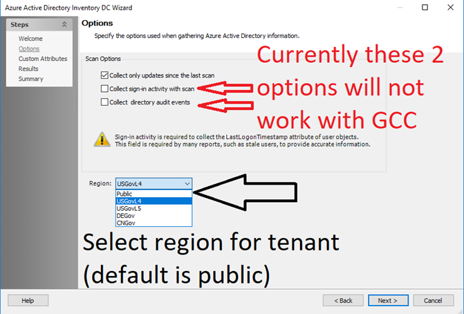

Summary:
Azure ADI - Connecting to an “AzureUSGovernment” cloud instance - GCC High Tenant
Submitted by:
Justin Giemza
Cumulative List of fixes included since Service Pack:
10.0_065 - SAT-8816 Azure AD: Group membership collection timeout/tmpdb
10.0_061 - SAT-8720/8242 StealthAudit Azure AD Configuration / Issue with AADI scan
10.0-022 - SAT-7835 Azure ADI: Failure to scan when TLS 1.0 and 1.1 disabled
Affected Versions:
10.0
Affected Module:
SA - DC – AzureADI
Dev Ticket:
SAT-8870 / SAT-8943
Escalation Number:
57373 / 57836
Resolved in Version:
DC\DCAzureADInventory.dll v. 10.0.41.0
PrivateAssemblies\Stealthbits.StealthAUDIT.DataCollectors.AzureADInventory.dll v. 10.0.41.0
PrivateAssemblies\Stealthbits.StealthAUDIT.DataCollectors.AzureADInventory.UI.dll v. 10.0.41.0
KB Type: Bug
Issue: - Connecting to an “AzureUSGovernment” cloud instance does not work
Instructions:
- Unblock the hotfix zip file in the windows property dialog if an unblock button exists there.
- Close all instances of StealthAUDIT (check task manager under processes for all users)
- Exit StealthAUDIT console
- Copy and replace files from the folders in this hotfix to the corresponding folders in SA Install dir.

https://downloads.stealthbits.com/access/files/SAHotFixes/10.0/SA_10.0_070.zip